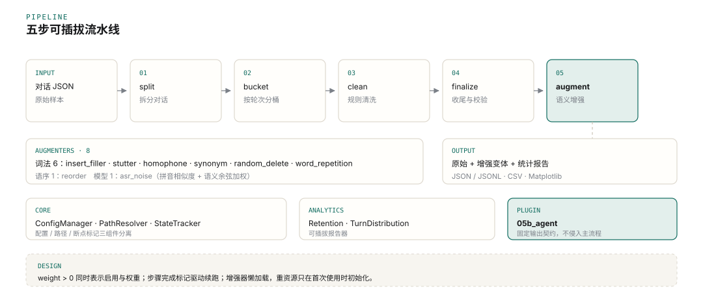

把 God Object 拆成三个组件
原先的 PipelineContext 同时管配置、路径和状态。现在拆成
ConfigManager、PathResolver、StateTracker，
通过构造函数注入给每个步骤。
Case 03 · Pipeline
把原始对话变成可训练、可复现、可扩展的批次。 五个步骤固定生命周期，增强器与分析器按配置插拔， 每一步都能单独重跑。
原始对话数据格式不统一，且不同训练目标需要的切片、条数和噪声分布都不一样。 如果写成一次性脚本，会遇到三个问题：
因此把流程拆成固定五步，每步有统一的 pre_run → run → post_run 生命周期，
增强器和分析器通过注册表接入，产物与完成标记都落在任务目录。

主链路是：01_split 按会话切分 → 02_bucket 分桶 →
03_clean 规则清洗 → 04_finalize 定稿 →
05_augment 生成增强变体。每步完成后写入完成标记，
resume: true 时跳过已完成步骤。
原先的 PipelineContext 同时管配置、路径和状态。现在拆成
ConfigManager、PathResolver、StateTracker，
通过构造函数注入给每个步骤。
weight 一个参数同时表达启用与权重
weight > 0 表示启用，并作为被选中的相对权重；
weight <= 0 表示禁用。增强器配置由
AUGMENTER_META 统一管理，只有一份定义。
enabled 与 weight 并存时，两者迟早互相矛盾。
每个步骤完成后在任务目录写 .step_<name>_done，
重跑时由 StateTracker.is_step_done() 判断。产物目录本身就是任务状态的来源。
早期设计的 Executor 调度层在实现后被移除，生命周期管理直接内联在
Pipeline._run_single() 里。
预处理阶段一次性计算异常词的拼音串与语义向量。替换时综合得分为
α × 拼音相似度 + (1 − α) × 语义相似度（默认 α = 0.7），
拼音相似度按编辑距离归一化。
分词结果用 lru_cache 缓存；确认文本真的变化后才 deepcopy；
循环外预先取出所有可增强消息的文本。
asr_noise 1 种，共 8 种。single 与 multi_step：前者按权重选一个，后者随机叠加多个。
语义修复不是写死在主链路里的，而是以 05b_agent 步骤接入，位置在增强之前。
该步骤目前是 M0 透传版：不改数据，只产出处理清单，用来验证插件能被正确加载、跳过和卸载。
输出契约已经固定：
{output_dir}/{run_id}/agent_training_data.json 修复后的数据（M0 等于输入）
{output_dir}/{run_id}/agent_manifest.jsonl 逐条处理记录
{output_dir}/{run_id}/run_metadata.json 运行元信息
逐条记录用对话内容的哈希作为稳定主键，因为现网数据没有可用的对话 ID，而下标跨 run 不稳定。
插件依赖主工程的 PipelineStep 抽象，因此不在开源切片内。
团队给出初始方向，我负责流水线重构与主要实现：五步生命周期与断点续跑、 三组件拆分、增强器注册与权重体系、分析器/报告器插件化、 ASR 噪声增强、性能优化，以及与 Agent 的插件接口。